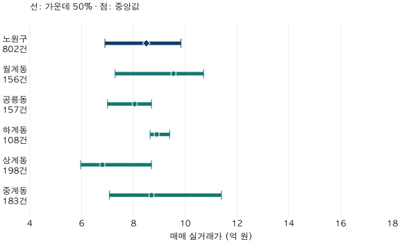
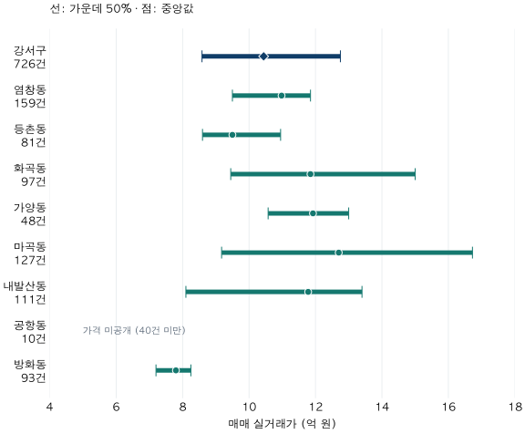

수도권 가격 지도 · 구에서 동네로
노원·강서 84㎡ 아파트, 같은 구에서도 동별 가격은 다를까?
2026년 상반기 전용84㎡ 이상85㎡ 미만 노원·강서 거래를 법정동별로 비교합니다. 중앙값과 가운데50% 구간, 표본 부족으로 비워 둔 가격을 함께 보고 단지 후보로 좁히는 기준을 확인하세요.
분석 기간 · 2026년 1~6월 계약 | 보유 자료 스냅샷 생성 · 2026-10-04
구의 아파트 중앙값이 내 예산과 비슷하면, 그 구의 어느 동에서나 비슷한 집을 찾을 수 있을까요? 2026년 상반기 전용 84㎡ 이상~85㎡ 미만 매매에서 노원구 중앙값은 8.50억 원이지만, 법정동별 중앙값은 6.80~9.55억 원입니다. 강서구도 구 중앙값 10.44억 원 한 개로 동별 차이를 설명하기 어렵습니다.
여기서 말하는 ‘동네’는 어떤 단위인가요?
이 글의 동네는 주소에 쓰이는 법정동입니다. 상계동을 상계1동·상계2동 같은 주민센터 단위로 쪼개지 않았습니다. 아파트 건물의 101동·102동과도 다릅니다. 같은 법정동 안에 여러 생활권과 서로 다른 단지가 들어갈 수 있습니다.
노원·강서는 기존 첫 집 시리즈의 두 사례 지역을 이어 사용했습니다. 서울에서 가격 차이가 가장 큰 구를 고른 것이 아닙니다. 모든 표는 2026년 1~6월 계약, 전용 84.00㎡를 포함하고 85.00㎡는 제외한 매매입니다. 정확히 84.00㎡만의 거래, 공급면적 34평, 전용 25·26평형 전체와 구분합니다.
중앙값은 거래가격을 순서대로 놓았을 때 가운데 값입니다. 하위 25% 지점부터 상위 25% 지점까지는 거래의 가운데 50% 구간이며, 표의 금액 단위는 억 원입니다. 구 값은 동별 중앙값을 평균하지 않고 구의 계약을 직접 모아 계산했습니다.
노원구 8.50억 원은 어느 동의 가격에 가까울까요?
노원 5개 법정동의 중앙값은 상계동 6.80억 원부터 월계동 9.55억 원까지입니다. 구 중앙값 8.50억 원과 가까운 동도 있지만, 그 숫자가 모든 동을 대신하지는 않습니다.

| 구·법정동 | 건수 | 하위25% | 중앙값 | 상위25% |
|---|---|---|---|---|
| 노원구 | 802 | 6.90 | 8.50 | 9.84 |
| 월계동 | 156 | 7.30 | 9.55 | 10.71 |
| 공릉동 | 157 | 7.00 | 8.05 | 8.70 |
| 하계동 | 108 | 8.65 | 8.90 | 9.40 |
| 상계동 | 198 | 5.96 | 6.80 | 8.70 |
| 중계동 | 183 | 7.08 | 8.70 | 11.40 |
좁은 화면에서는 표를 좌우로 움직여 볼 수 있습니다. 표와 그림은 법정동 코드 순서이며 가격 순위가 아닙니다. 소수 둘째 자리 반올림 전 값으로 계산했습니다.
동 사이의 차이만큼 동 안의 폭도 눈여겨볼 만합니다. 중계동은 중앙값이 8.70억 원이지만 가운데 50%가 7.08~11.40억 원에 걸칩니다. 하계동은 중앙값 8.90억 원, 가운데 50%는 8.65~9.40억 원입니다. 중앙값이 0.20억 원 차이여도 두 동의 거래 분포는 같지 않습니다.
월계동의 가운데 50%인 7.30~10.71억 원과 상계동의 5.96~8.70억 원은 일부 겹칩니다. 월계동 중앙값이 더 높다는 말은 월계동의 모든 거래가 상계동의 모든 거래보다 높다는 뜻이 아닙니다. 반대로 이 구간의 겹침만으로 실제 거래의 몇 %가 겹치는지도 계산할 수 없습니다.
강서구에서는 왜 가격을 비워 둔 동이 있나요?
강서구는 726건, 구 중앙값은 10.44억 원입니다. 가격을 공개할 수 있는 7개 동의 중앙값은 방화동 7.80억 원부터 마곡동 12.70억 원까지입니다. 공항동은 10건으로, 이 글의 가격 구간 공개 기준인 40건에 못 미칩니다.

| 구·법정동 | 건수 | 하위25% | 중앙값 | 상위25% |
|---|---|---|---|---|
| 강서구 | 726 | 8.59 | 10.44 | 12.75 |
| 염창동 | 159 | 9.50 | 10.98 | 11.85 |
| 등촌동 | 81 | 8.60 | 9.50 | 10.95 |
| 화곡동 | 97 | 9.45 | 11.85 | 15.00 |
| 가양동 | 48 | 10.58 | 11.93 | 13.00 |
| 마곡동 | 127 | 9.18 | 12.70 | 16.73 |
| 내발산동 | 111 | 8.10 | 11.78 | 13.40 |
| 공항동 | 10 | 표본 부족 · 가격 미공개 | ||
| 방화동 | 93 | 7.20 | 7.80 | 8.25 |
관측 거래가 있는 8개 법정동을 모두 표시했습니다. 이것이 강서구의 모든 법정동 목록이라는 뜻은 아닙니다. 거래 없는 지역의 가격은 이 표로 알 수 없습니다.
가격 공개 7개 동의 거래는 716건으로 구 합계 726건의 98.6%입니다. 공항동 10건은 구 합계와 구 분위수에 포함됩니다. 동별 표의 가격만 비워 두었으므로, 그 행을 빼고 구 전체를 다시 계산하지 않았습니다. 40건은 이 글에서 정한 비교 기준이며, 그 이상이면 개별 주택의 가격까지 정확해진다는 보증은 아닙니다.
마곡동은 중앙값 12.70억 원, 가운데 50%는 9.18~16.73억 원입니다. 염창동은 중앙값 10.98억 원, 가운데 50%는 9.50~11.85억 원입니다. 마곡동의 구간이 더 넓고 염창동 구간과도 겹칩니다. 예산이 11억 원이라면 동 중앙값만 보고 한 동을 바로 제외하기보다, 해당 면적의 구체적인 단지 거래를 확인할 이유가 있습니다. 그 예산에 현재 매물이 있다는 뜻은 아닙니다.
동별 격차를 곧바로 입지의 가격 차이라고 할 수 있나요?
그렇게 해석하기에는 비교 조건이 충분하지 않습니다. 같은 면적·반기여도 거래된 집의 연식, 층, 단지 규모, 교통, 수리 상태와 계약월이 다릅니다. 특정 단지 거래가 많이 잡힌 동은 그 단지의 가격이 더 많이 반영됩니다. 이 표는 그런 차이를 보정한 동일 주택 가격이 아닙니다.
가장 강한 반론은 “동의 차이가 아니라 거래된 단지 구성의 차이일 수 있다”는 것입니다. 이 자료는 그 반론을 제거하지 못합니다. 따라서 2.75억 원·4.90억 원은 이번 표의 공개 동별 중앙값 중 가장 큰 값과 작은 값의 차이입니다. 동네를 옮기면 같은 집의 가치가 그만큼 바뀐다는 효과나 구 내부 분산의 분해 비율이 아닙니다.
전용 59형, 다른 기간, 비슷한 연식이나 같은 층 조건으로 바꾸면 범위와 순서도 달라질 수 있습니다. 동 안의 가격 폭 역시 지역의 미래 상승 가능성이나 가구 자산 불평등을 나타내지 않습니다. 구 평균이 시기별 거래 구성에 따라 달라지는 문제는 노원구 평균 역전 사례에서 별도로 설명합니다.
구에서 동네, 실제 단지로 어떻게 좁히면 될까요?
- 구의 중앙값 옆에 동별 구간을 적습니다. 중앙값 차이와 동 안의 폭을 함께 봅니다. 가운데 50% 밖에도 나머지 절반의 거래가 있습니다.
- 건수와 미공개 여부를 확인합니다. 빈칸은 0원이 아닙니다. 표본 부족이면 기간을 넓히는 등 별도 비교가 필요하며, 조건을 바꾼 표와 현재 표를 섞지 않습니다.
- 관심 단지 두 곳의 조건을 맞춥니다. 같은 전용면적, 가까운 계약월부터 시작해 연식·층·교통·관리 상태를 확인합니다. 동 중앙값을 개별 매물의 적정가로 대입하지 않습니다.
- 관측 거래와 현재 제시 조건을 구분해 적습니다. 계약일·해제 여부를 다시 확인하고 현재 호가, 수리비와 이사비는 따로 적습니다.
자료·공개 기준·검증 방법 펼치기
- 원천: 국토교통부 아파트 매매 실거래가 상세 자료를 정제한 자체 집계입니다. 국토부 공식 지역 통계나 현재 매물 조회가 아닙니다. 법정동은 현행 아파트 마스터의 시구 코드와 동 코드를 함께 사용했으며, 단지 일련번호 앞자리나 동 이름만으로 추정하지 않았습니다.
- 선택·제외: 기존 첫 집 시리즈의 노원·강서를 사용했습니다. 2026년1~6월 계약,84≤전용면적<85㎡,정제 후 가격 비교 적격 매매에서 토지임대부를 제외했습니다. 해제·직거래 등 기존 정제 기준을 적용해 해당 기간·면적의 노원39건,강서58건을 제외하고802건·726건을 사용했습니다. 신고 뒤 수정되거나 해제 정보가 추가될 가능성은 남습니다.
- 지리·범위: 분석 대상 적격 계약은 모두 마스터와 법정동 코드에 연결됐습니다. 원천2구×6개월12파일 존재를 확인했습니다. 보유 자료 안의 대조이며 모든 실제 거래가 수집됐음을 보증하지 않습니다. 거래가 관측된 동만 표에 포함했습니다.
- 통계·공개: 계약1건=1표의 선형 보간 하위25%·중앙값·상위25%. 가격은40건 이상,건수는10건 이상을 공개했습니다. 공항동의 가격은 JSON에서도 비워 두었습니다. IQR은 최저~최고 범위나 통계적 신뢰구간이 아닙니다. 반올림 전 공개 집계 JSON에는 개별 거래·단지 식별자가 없습니다.
- 검증: 관측 테이블 SQL과 별도 매매 사실 테이블·마스터의 Python 집계로 건수와 분위수를 대조했습니다. 동별 합계는 구 건수와, 구 분위수는 앞선 서울·경기 분포 글과 일치했습니다. 구 값은 동별 대표값의 평균이 아닙니다.
- 시점: 보유 스냅샷 생성일2026-10-04,수록 기준 끝월2026-09. 실제 신고·수집 도착 컷오프는 미상입니다. 최근 분기를 피해6월에서 끝냈으며6월 말 당시 알 수 있던 자료만의 집계는 아닙니다.
분석·집필: 파파펭귄 (Nobot Kang). 에이전트로 집계 대조·계산·초안 검토를 보조했습니다. 공식 원천 확인일:2026-10-10.